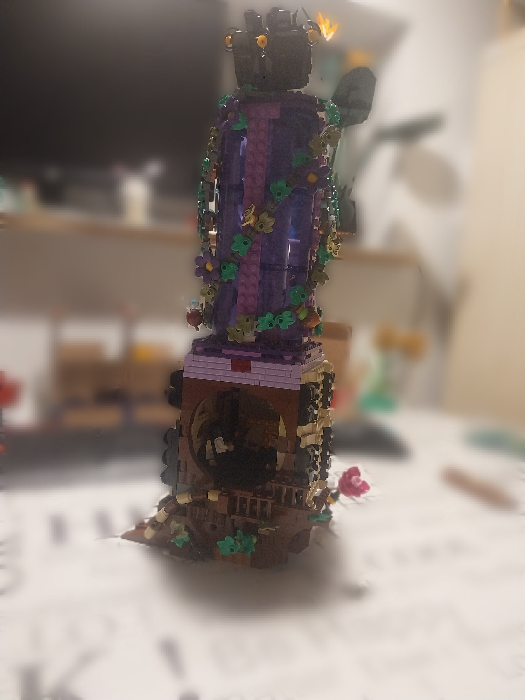
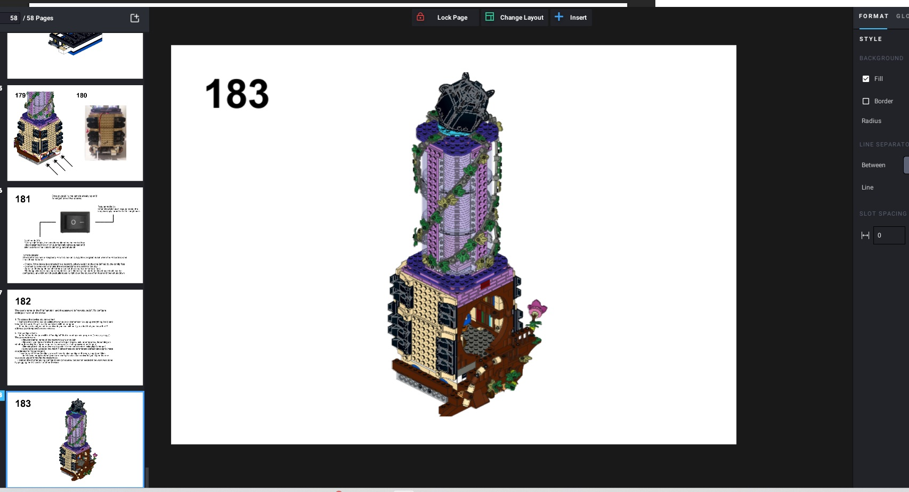
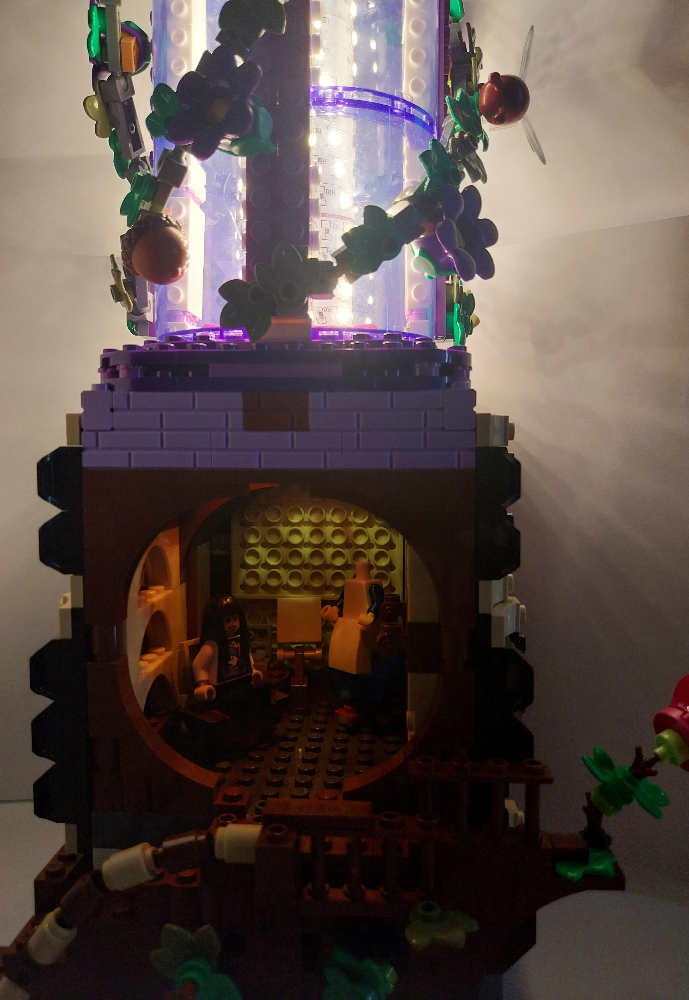

Lampion
Without a question, my most ambitious project to date, not just in terms of LEGO building, but as a feat of engineering, for which I had to use many of my various skills and even learn new ones on the way. The lamp was a gift to someone who experienced difficulties maintaining sleep schedules and wanted a way to regulate the light levels in the room to help that. To fulfil this, the LEGO model had to feature complex electronic and software components as well a design fitting a dreamy, comfortable environment.


The build is inspired by the idea of a tree house, where the long trunk is made of transparent purple pieces to house the LED strip. For safety reasons, this is not wrapped around LEGO bricks, but instead I designed a long LEGO System compatible pole with a 6x6 plate shaped bottom and a circular 2x2 top so that it can clutch onto the rest of the build, and 3D printed it using heat resistant resin. This tower is attached to the semi-transparent roof of the small wooden home, so that too gets a faint warm light. The interior of the room itself is decorated to be fitting with the persons taste and interests, and has an organic shaped, wooden exterior to really express the tree hut aesthetic. Underneath, the foundation hides a small shelf that can be pulled out and hides a Raspberry Pi controller that regulates the LED. A switch can be used to select between modes: standard means the LED strip is simply turned on to function as a regular lamp, night mode uses the programming on the microcontroller to connect to the network, read the estimated time of sunset, turn on the LED soon after, and automatically start dimming at a previously selected time. After an hour of continuous dimming, the lamp shuts off until sunset the next day. To further decorate the build, I designed a black flower to crown the tower, as well as more floral vines running along the transparent tube. These are completed with my favourite way of organic detailing: BAM elements! The minifig accessories are nicely detailed at a small scale, making them very nice tools for creating a natural effect. In this case, I used the bumblebee headgear with wings to make little crawling creatures, and the flower costume mould with the acorns attached to standard green and yellow minifig heads to make a colorful visual display.

